💠 末日决战：永恒战争
Aeon's End: War Eternal · 设计：Kevin Riley · Indie Boards and Cards / Action Phase Games 出版 · 1–4 人 · 官方英文规则书全文翻译（20 页 · AI 辅助机翻）
本页收录《末日决战：永恒战争》（Aeon's End: War Eternal, 2016）的原版官方规则书全部 20 页（底本：Indie Boards and Cards 官方规则书（boardgame.bg 镜像直链），aeons%20end%20war%20eternal%20rules.pdf），逐页随图排列，点击任意图片即可放大查看；每页下方默认折叠了该页的 AI 辅助中文机翻对照，需要时可展开。规则内容归 Indie Boards and Cards / Action Phase Games 及版权方所有，收录仅供个人学习查阅。
整理说明：机翻对照按本站术语口径对齐（牌库/手牌/回合/轮/板块/指示物等），PDF 图文混排页的语序可能与原书视觉顺序略有出入；规则细节请一律以页面上方原书页面为准。
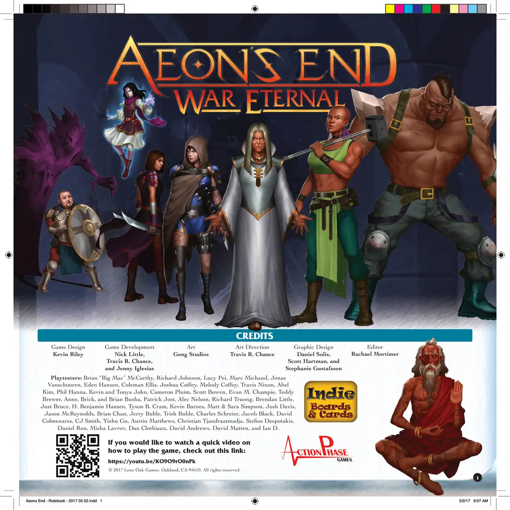
📝 第 1 页 AI 机翻对照（点击展开）
游戏设计
Kevin Riley
游戏开发
Nick Little、
Travis R. Chance 和
Jenny Iglesias
美术
Gong Studios
美术指导
Travis R. Chance
平面设计
Daniel Solis、
Scott Hartman 和
Stephanie Gustafsson
编辑
Rachael Mortimer
测试玩家：Brian "Big Mac" McCarthy、Richard Johnson、Lucy Pei、Marc Michaud、Jonas Vanschooren、Eden Hansen、Coleman Ellis、Joshua Coffey、Melody Coffey、Travis Nixon、Abel Kim、Phil Hanna、Kevin 和 Tonya John、Cameron Pluim、Scott Bowen、Evan M. Champie、Teddy Brewer、Anne、Brick 和 Brian Busha、Patrick Jost、Alec Nelson、Richard Truong、Brendan Little、Just Bruce、H. Benjamin Hansen、Tyson B. Cram、Kevin Barnes、Matt & Sara Simpson、Josh Davis、Jason McReynolds、Brian Chan、Jerry Buhle、Trish Buhle、Charles Schreier、Jacob Black、David Colmenares、CJ Smith、Yizhu Gu、Austin Matthews、Christian Tjandraatmadja、Stelios Despotakis、Daniel Ron、Misha Lavrov、Dan Clothiaux、David Andrews、David Matten 和 Ian D.
© 2017 Lone Oak Games. Oakland, CA 94610. 保留所有权利。
致谢
如果你想观看一个关于如何玩游戏的快速视频，请查看此链接：
https://youtu.be/KO9O9rO0nPk
Aeons End - 规则书 - 2017 05 02.indd 1
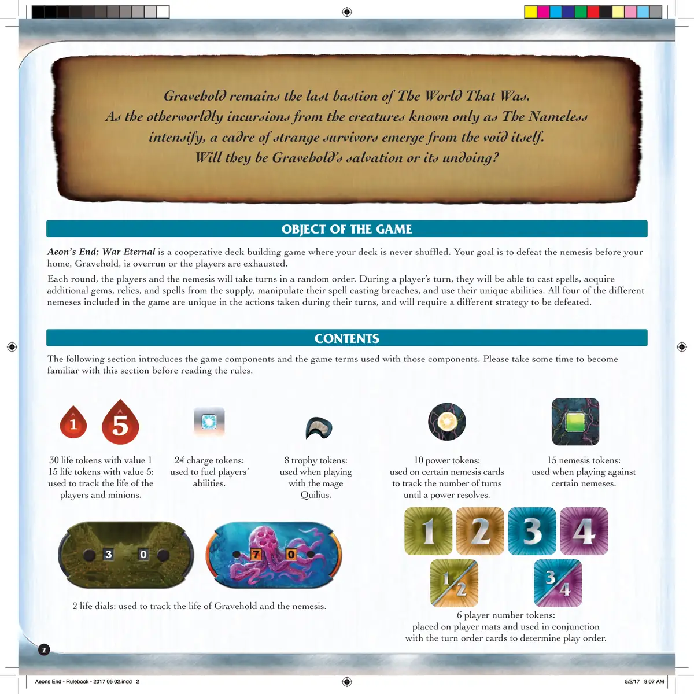
📝 第 2 页 AI 机翻对照（点击展开）
《永恒纪元：战争永恒》(Aeon's End: War Eternal) 是一款合作构建牌库的游戏，你的牌库永远不会被洗牌。你的目标是在你的家园 Gravehold 被攻陷或玩家精疲力竭之前击败 nemesis。
每轮，玩家和 nemesis 将以随机顺序轮流行动。在玩家的回合中，他们将能够施放法术，从供应区获取额外的宝石、圣遗物和法术，操控他们的施法裂隙，并使用他们的独特能力。游戏中包含的四种不同的 nemesis 在其回合中的行动都是独特的，并且需要不同的策略才能被击败。
下一节介绍了游戏组件和与这些组件一起使用的游戏术语。在阅读规则之前，请花些时间熟悉本节。
Gravehold 仍然是那个曾经的世界(The World That Was)的最后堡垒。
随着被称为无名者(The Nameless)的生物来自异次元的入侵加剧，一群奇怪的幸存者从虚空中涌现。
他们会是 Gravehold 的救世主还是它的毁灭者？
30 个数值为 1 的生命指示物
15 个数值为 5 的生命指示物：
用于追踪玩家和仆从的生命值。
24 个充能指示物：
用于为玩家的能力充能。
15 个 nemesis 指示物：
在与某些 nemesis 对战时使用。
10 个力量指示物：
用于某些 nemesis 卡牌上追踪力量生效前的回合数。
8 个战利品指示物：
在与法师 Quilius 游戏时使用。
2 个生命轮盘：用于追踪 Gravehold 和 nemesis 的生命值。
6 个玩家数量指示物：
放置在玩家垫上，与回合顺序卡一起使用以确定游戏顺序。
游戏目标
内容物
Aeons End - Rulebook - 2017 05 02.indd 2
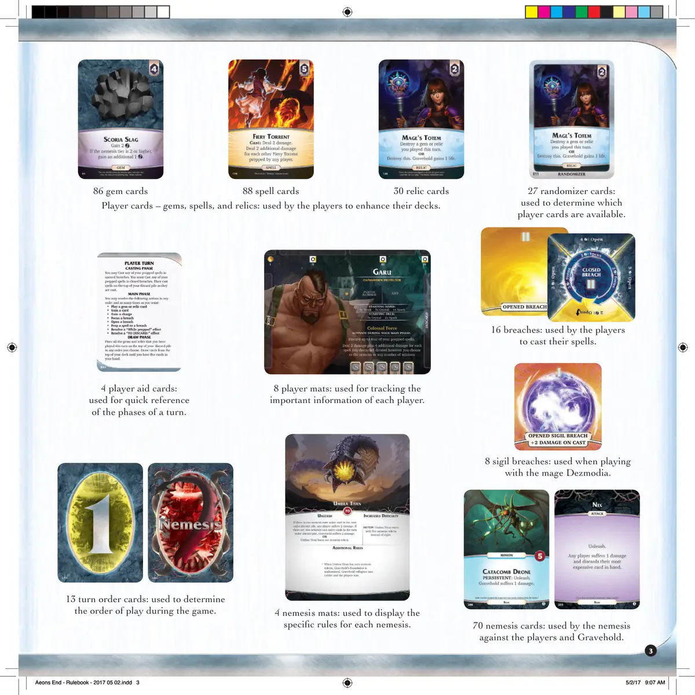
📝 第 3 页 AI 机翻对照（点击展开）
16 个裂隙：玩家用于施放法术。
8 个符文裂隙：与法师 Dezmodia 游戏时使用。
70 张 nemesis 卡牌：nemesis 对抗玩家和 Gravehold 时使用。
玩家卡牌——宝石、法术和圣遗物：玩家用于增强他们的牌库。
86 张宝石卡
30 张圣遗物卡
88 张法术卡
27 张随机卡：
用于确定哪些玩家卡牌可用。
4 张玩家辅助卡：
用于快速参考回合的各个阶段。
13 张回合顺序卡：用于确定游戏中的行动顺序。
8 张玩家垫：用于追踪每个玩家的重要信息。
4 张 nemesis 垫：用于显示每个 nemesis 的特定规则。
Aeons End - Rulebook - 2017 05 02.indd 3
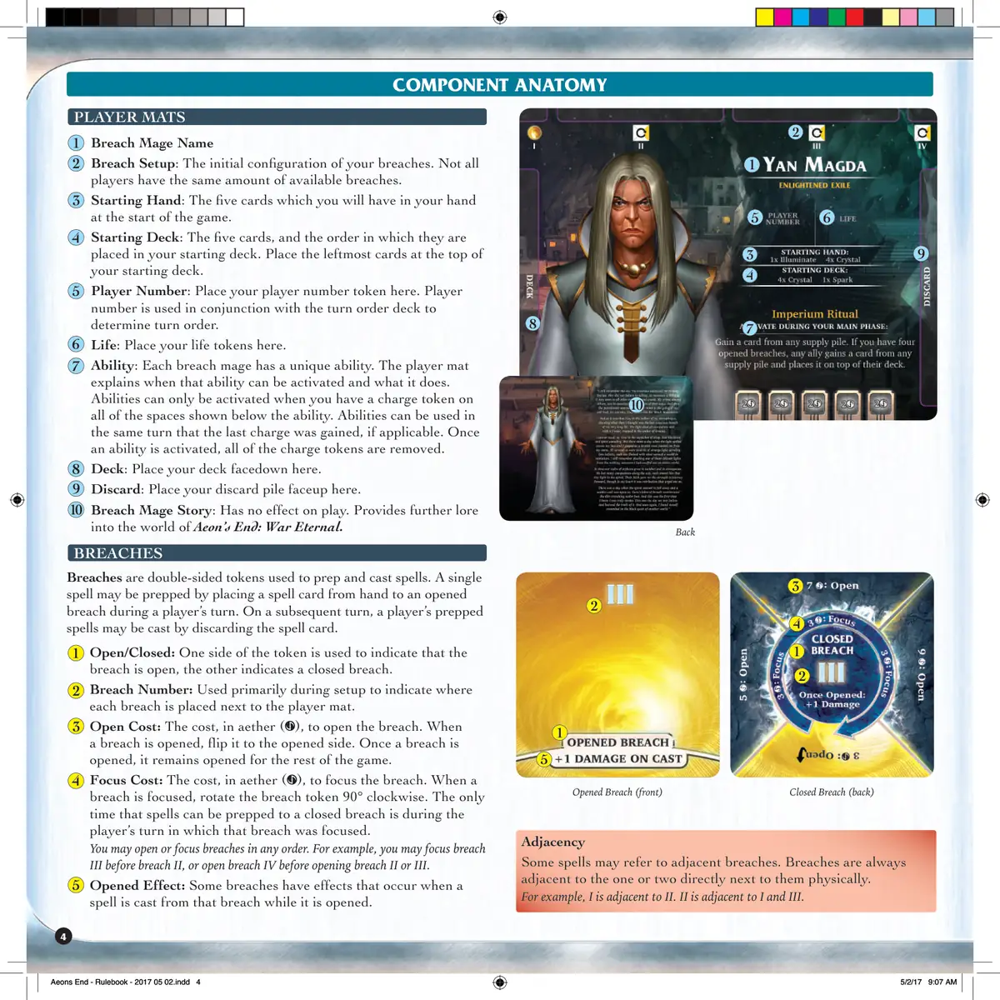
📝 第 4 页 AI 机翻对照（点击展开）
组件解剖
相邻
某些法术可能会提及相邻的裂隙。裂隙总是与物理上直接相邻的一个或两个裂隙相邻。
例如，I 与 II 相邻。II 与 I 和 III 相邻。
裂隙法师名称
裂隙设置：你的裂隙的初始配置。并非所有玩家都有相同数量的可用裂隙。
起始手牌：你在游戏开始时将拥有的五张手牌。
起始牌库：五张卡牌，以及它们被放入起始牌库的顺序。将最左边的牌放在你起始牌库的顶部。
玩家编号：将你的玩家编号指示物放在这里。玩家编号与回合顺序牌库结合使用以确定回合顺序。
生命值：将你的生命值指示物放在这里。
能力：每个裂隙法师都有独特能力。玩家垫说明了该能力何时可以激活以及它的作用。只有当你在能力下方所示的所有格子上都有充能指示物时，才能激活能力。如果适用，能力可以在获得最后一个充能的同一回合使用。一旦能力被激活，所有的充能指示物都会被移除。
牌库：将你的牌库面朝下放在这里。
弃牌堆：将你的弃牌堆面朝上放在这里。
裂隙法师故事：对游戏没有影响。提供了关于《永恒纪元：永恒战争》(Aeon's End: War Eternal) 世界的更多背景故事。
玩家垫
裂隙是双面指示物，用于准备和施放法术。在玩家的回合期间，可以通过将手牌中的法术卡牌放置到已打开的裂隙上来准备单个法术。在随后的回合中，玩家准备好的法术可以通过弃置法术卡牌来施放。
开/关：指示物的一面用于表示裂隙已打开，另一面表示关闭的裂隙。
裂隙编号：主要用于设置期间，表示每个裂隙放置在玩家垫旁边的位置。
开启成本：以以太( )为单位的开启裂隙成本。当裂隙被开启时，将其翻到已打开的一面。一旦裂隙被开启，它将在剩余的游戏中保持开启状态。
聚焦成本：以以太( )为单位的聚焦裂隙成本。当裂隙被聚焦时，将裂隙指示物顺时针旋转90°。只有在玩家聚焦该裂隙的回合期间，才能将法术准备到关闭的裂隙上。
你可以按任意顺序开启或聚焦裂隙。例如，你可以在裂隙II之前聚焦裂隙III，或者在裂隙II或III之前开启裂隙IV。
开启效果：某些裂隙有效果，当从该裂隙施放法术且裂隙处于开启状态时，这些效果会发生。
裂隙
已开启的裂隙（正面）
已关闭的裂隙（背面）
背面
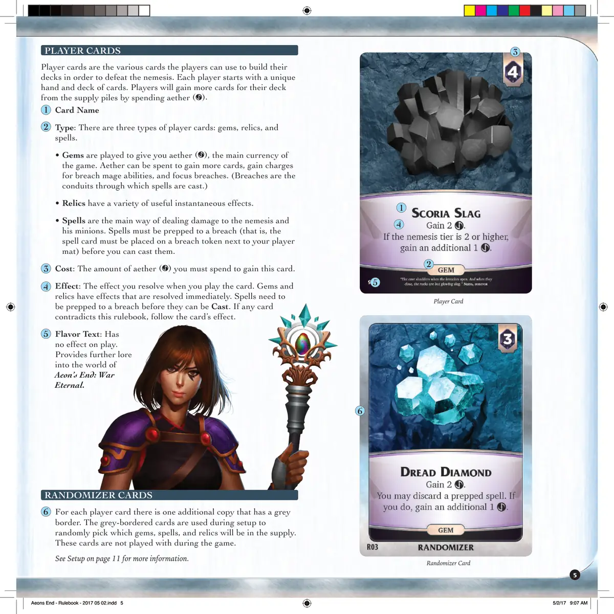
📝 第 5 页 AI 机翻对照（点击展开）
玩家卡牌是玩家可以用来构建牌库以击败宿敌的各种卡牌。每位玩家开始时都有一套独特的手牌和牌库。玩家将通过花费以太( )从供应堆中获取更多卡牌加入自己的牌库。
卡牌名称
类型：有三种类型的玩家卡牌：宝石、圣物和法术。
• 宝石用于为你提供以太( )，这是游戏的主要货币。以太可以用来获取更多卡牌、为裂隙法师能力充能，以及聚焦裂隙。（裂隙是施放法术的通道。）
• 圣物具有各种有用的即时效果。
• 法术是对抗宿敌及其爪牙的主要伤害方式。法术必须先准备到裂隙上（即，法术卡必须放置在你玩家版图旁边的裂隙指示物上），然后才能施放。
费用：你必须花费多少以太( )来获取这张卡牌。
效果：你打出卡牌时解析的效果。宝石和圣物的效果会立即解析。法术需要先准备到裂隙上才能被施放。如果任何卡牌与本规则书相矛盾，请遵循卡牌的效果。
风味文本：对游戏玩法没有影响。
为《永恒纪元：战争永恒》的世界
提供了更多背景故事。
对于每张玩家卡牌，都有一张额外带有灰色边框的副本。灰色边框的卡牌在设置阶段用于随机选择哪些宝石、法术和圣物将出现在供应堆中。这些卡牌在游戏过程中不使用。
更多详情请参见第11页的设置部分。
玩家卡牌
随机卡牌
玩家卡牌
随机卡牌
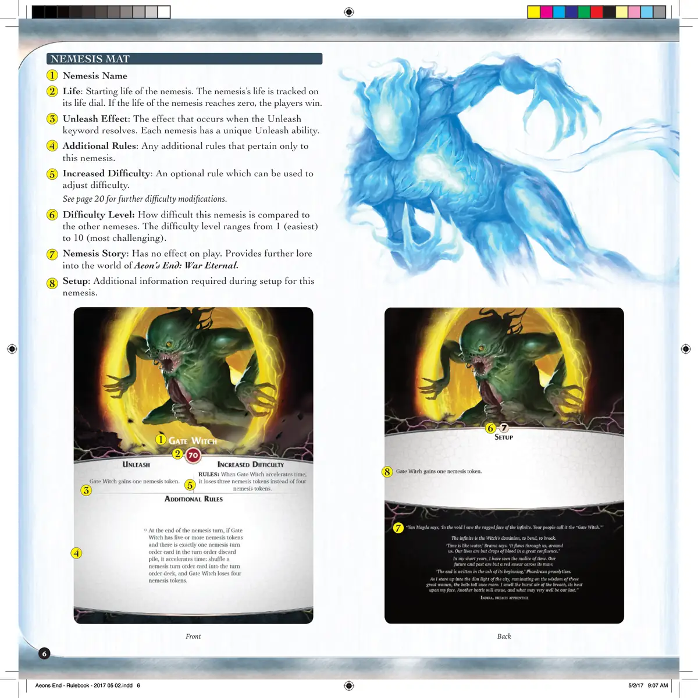
📝 第 6 页 AI 机翻对照（点击展开）
宿敌名称
生命值：宿敌的初始生命值。宿敌的生命值在其生命值指示盘上追踪。如果宿敌的生命值降至零，玩家获胜。
释放效果：当"释放"关键词解析时发生的效果。每个宿敌都有独特的释放能力。
额外规则：仅与此宿敌相关的任何额外规则。
增加难度：可用于调整难度的可选规则。
更多难度调整请参见第20页。
难度等级：与其他宿敌相比，这个宿敌的难度。难度等级范围从1（最简单）到10（最具挑战性）。
宿敌故事：对游戏玩法没有影响。为《永恒纪元：战争永恒》的世界提供了更多背景故事。
设置：此宿敌在设置阶段所需的额外信息。
正面
背面
宿敌版图
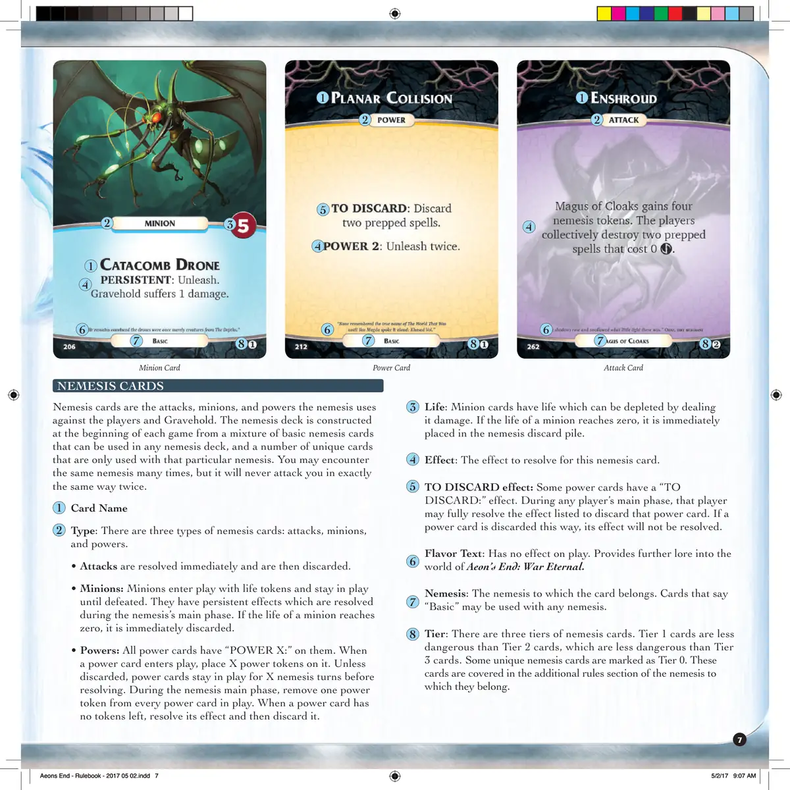
📝 第 7 页 AI 机翻对照（点击展开）
生命：米宝卡牌有生命值，可以通过对其造成伤害来减少。如果米宝的生命值降至零，它会被立即放入 nemesis 弃牌堆。
效果：要为此 nemesis 卡牌解决的效果。
弃牌效果：一些力量卡牌有"弃牌："效果。在任何玩家的主要阶段，该玩家可以完全解决列出的效果来弃掉那张力量卡牌。如果力量卡牌以此方式被弃掉，其效果将不会得到解决。
风味文本：对游戏进行没有影响。为《永恒纪元：永恒战争》(Aeon's End: War Eternal)的世界提供更多背景故事。
Nemesis：该卡牌所属的 nemesis。标注"基础"(Basic)的卡牌可用于任何 nemesis。
等级：nemesis 卡牌有三个等级。1级卡牌比2级卡牌危险性低，2级卡牌比3级卡牌危险性低。一些独特的 nemesis 卡牌被标记为0级。这些卡牌在其所属 nemesis 的额外规则部分有说明。
NEMESIS 卡牌
Nemesis 卡牌是 nemesis 用来对抗玩家和 Gravehold 的攻击、米宝和力量。nemesis 牌库在每局游戏开始时由基础 nemesis 卡牌（可用于任何 nemesis 牌库）和一定数量的独特卡牌（仅用于特定 nemesis）混合构建而成。你可能会多次遇到同一个 nemesis，但它永远不会以完全相同的方式攻击你。
卡牌名称
类型：有三种类型的 nemesis 卡牌：攻击、米宝和力量。
• 攻击会立即解决，然后被弃掉。
• 米宝：米宝进入游戏时带有生命指示物，并留在游戏中直到被击败。它们有持续效果，在 nemesis 的主要阶段解决。如果米宝的生命值降至零，它会被立即弃掉。
• 力量：所有力量卡牌上都有"力量 X:"。当一张力量卡牌进入游戏时，在其上放置 X 个力量指示物。除非被弃掉，力量卡牌会在游戏中停留 X 个 nemesis 回合后才解决。在 nemesis 主要阶段，从游戏中每张力量卡牌上移除一个力量指示物。当一张力量卡牌没有指示物剩余时，解决其效果然后弃掉它。
米宝卡牌
力量卡牌
攻击卡牌
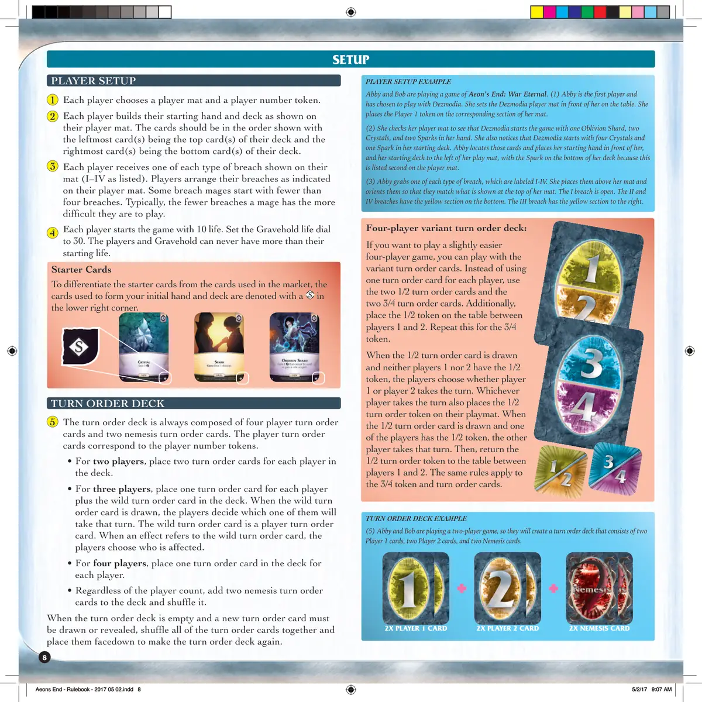
📝 第 8 页 AI 机翻对照（点击展开）
回合顺序牌库总是由四张玩家回合顺序牌和两张 nemesis 回合顺序牌组成。玩家回合顺序牌对应玩家编号指示物。
• 对于两名玩家，在牌库中为每位玩家放置两张回合顺序牌。
• 对于三名玩家，在牌库中为每位玩家放置一张回合顺序牌，并加入一张 wild 回合顺序牌。当 wild 回合顺序牌被抽到时，玩家们决定他们中的谁将执行该回合。wild 回合顺序牌是一张玩家回合顺序牌。当某个效果提及 wild 回合顺序牌时，玩家们选择谁会受到该效果影响。
• 对于四名玩家，在牌库中为每位玩家放置一张回合顺序牌。
• 无论玩家数量如何，向牌库中添加两张 nemesis 回合顺序牌并洗牌。
当回合顺序牌库为空且必须抽牌或揭示新的回合顺序牌时，将所有回合顺序牌洗在一起，面朝下放置，重新组成回合顺序牌库。
每位玩家选择一张玩家垫和一张玩家编号指示物。
每位玩家根据其玩家垫上的说明构建起始手牌和牌库。牌的顺序应如图所示，最左边的牌是牌库顶部的牌，最右边的牌是牌库底部的牌。
每位玩家获得其垫上显示的每种裂隙类型各一张（按列表为 I-IV）。玩家按照其玩家垫上的指示排列他们的裂隙。一些裂隙法师开始时少于四个裂隙。通常，法师拥有的裂隙越少，游戏难度就越高。
每位玩家以 10 点生命值开始游戏。将 Gravehold 生命值指示器设置为 30。玩家和 Gravehold 的生命值永远不会超过其起始生命值。
玩家设置示例
Abby 和 Bob 正在玩 Aeon's End: War Eternal 游戏。(1) Abby 是第一位玩家，选择使用 Dezmodia。她在桌上将 Dezmodia 玩家垫放在自己面前。她将玩家 1 指示物放在其垫的相应区域上。
(2) 她查看自己的玩家垫，发现 Dezmodia 游戏开始时手牌中有一张 Oblivion Shard、两张 Crystals 和两张 Sparks。她还注意到 Dezmodia 的起始牌库中有四张 Crystals 和一张 Spark。Abby 找到这些牌，将起始手牌放在自己面前，将起始牌库放在游戏垫左侧，因为 Spark 在玩家垫上列在第二位，所以它位于牌库底部。
(3) Abby 拿到每种类型的裂隙各一张，标记为 I-IV。她将这些裂隙放在垫子上方，并调整方向使其与垫子顶部显示的内容相匹配。I 裂隙是开放的。II 和 IV 裂隙的黄色部分在底部。III 裂隙的黄色部分在右侧。
回合顺序牌库示例
(5) Abby 和 Bob 正在玩一个双人游戏，因此他们将创建一个回合顺序牌库，该牌库包含两张玩家1卡、两张玩家2卡和两张宿敌卡。
2X 玩家1卡
2X 玩家2卡
2X 宿敌卡
起始卡牌
为了将起始卡牌与市场上使用的卡牌区分开来，用于组成你初始手牌和牌库的卡牌在右下角标有 S。
四人变体回合顺序牌库：
如果你想玩一个稍微简单一些的四人游戏，你可以使用变体回合顺序卡。不使用每位玩家一张回合顺序卡，而是使用两张 1/2 回合顺序卡和两张 3/4 回合顺序卡。此外，将 1/2 指示物放在玩家1和玩家2之间的桌面上。对 3/4 指示物重复此操作。
当抽到 1/2 回合顺序卡且玩家1和玩家2都没有 1/2 指示物时，玩家选择由玩家1还是玩家2进行回合。 whichever 玩家进行回合也将 1/2 回合顺序指示物放在他们的游戏垫上。当抽到 1/2 回合顺序卡且其中一位玩家有 1/2 指示物时，另一位玩家进行该回合。然后，将 1/2 回合顺序指示物放回玩家1和玩家2之间的桌面上。相同的规则适用于 3/4 指示物和回合顺序卡。
玩家设置
回合顺序牌库
设置
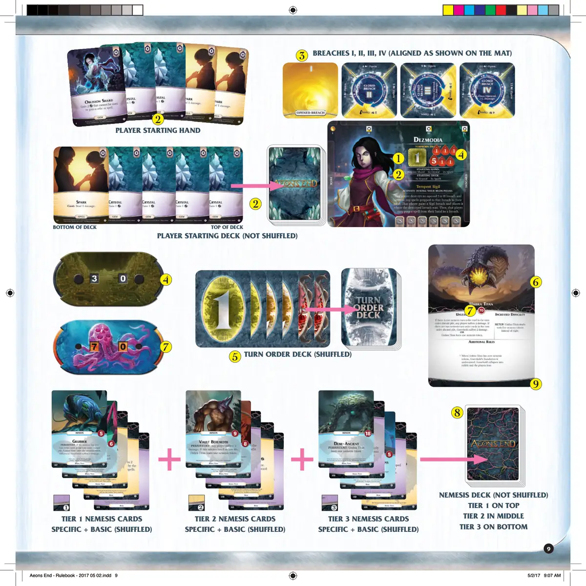
📝 第 9 页 AI 机翻对照（点击展开）
缺口 I、II、III、IV（按垫子所示对齐）
回合顺序牌库（洗牌）
1级敌人牌
特殊牌+基础牌（洗牌）
2级敌人牌
特殊牌+基础牌（洗牌）
3级敌人牌
特殊牌+基础牌（洗牌）
敌人牌库（不洗牌）
1级牌在上层
2级牌在中间
3级牌在下层
玩家起始手牌
玩家起始牌库（不洗牌）
牌库底部
牌库顶部
Aeons End - Rulebook - 2017 05 02.indd 9
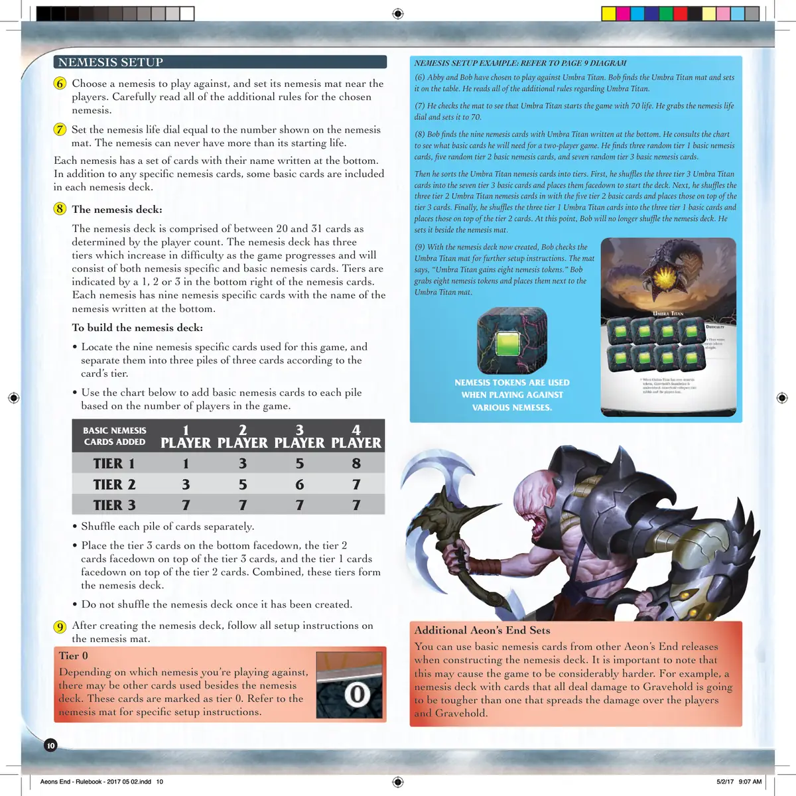
📝 第 10 页 AI 机翻对照（点击展开）
选择一个对手进行游戏，并将其对手垫放在玩家附近。仔细阅读所选对手的所有额外规则。
将对手生命度盘设置为对手垫上显示的数值。对手的生命值永远不会超过其起始生命值。
创建对手牌库后，遵循对手垫上的所有设置说明。
对手牌库：
对手牌库由20到31张牌组成，具体数量取决于玩家数量。对手牌库有三个难度递增的等级，由特定对手牌和基础对手牌组成。等级通过对手牌右下角的1、2或3表示。
每个对手有九张特定对手牌，牌底写有对手名称。
构建对手牌库：
• 找到本游戏使用的九张特定对手牌，并根据牌的等级将它们分成三堆，每堆三张。
• 使用下表根据游戏中的玩家数量为每堆添加基础对手牌。
基础对手牌
添加数量
玩家
玩家
玩家
玩家
1级
2级
3级
• 分别洗每堆牌。
• 将3级牌面朝下放在底部，2级牌面朝下放在3级牌上，1级牌面朝下放在2级牌上。这些等级组合在一起形成对手牌库。
• 牌库创建后不要洗牌。
对手设置示例：参见第9页图示
(6) Abby和Bob选择与Umbra Titan（乌布拉泰坦）对战。Bob找到Umbra Titan垫并将其放在桌上。他阅读了所有关于Umbra Titan的额外规则。
(7) 他查看垫子，确认Umbra Titan游戏开始时有70点生命值。他拿起对手生命度盘并将其设置为70。
(8) Bob找到底部写有Umbra Titan名称的九张对手牌。他查阅图表，了解在两人游戏中需要哪些基础牌。他找到三张随机的1级基础对手牌，五张随机的2级基础对手牌，和七张随机的3级基础对手牌。
然后他将Umbra Titan对手牌按等级分类。首先，他将三张3级Umbra Titan牌与七张3级基础牌洗在一起，面朝下放置开始构建牌库。接着，他将三张2级Umbra Titan对手牌与五张2级基础牌洗在一起，放在3级牌上。最后，他将三张1级Umbra Titan牌与三张1级基础牌洗在一起，放在2级牌上。此时，Bob将不再洗对手牌库。他将牌库放在对手垫旁边。
(9) 对手牌库现已创建，Bob查看
乌姆布拉泰坦（Umbra Titan）垫子用于进一步的设置说明。垫子上写着："乌姆布拉泰坦获得八个 nemesis 指示物。" 鲍勃（Bob）抓取八个 nemesis 指示物，并将它们放在乌姆布拉泰坦垫子旁边。
NEMESIS 指示物用于
对抗各种 nemesis 时使用。
0级
根据你对抗的 nemesis 不同，除了 nemesis 牌库外，可能还会使用其他卡牌。这些卡牌标记为 0 级。请参考 nemesis 垫子获取具体的设置说明。
额外的 Aeon's End 套装
在构建 nemesis 牌库时，你可以使用其他 Aeon's End 版本中的基础 nemesis 卡牌。需要注意的是，这可能会导致游戏难度显著增加。例如，一个所有卡牌都对 Gravehold 造成伤害的 nemesis 牌库，会比一个将伤害分散给玩家和 Gravehold 的牌库更具挑战性。
NEMESIS 设置
每个 nemesis 都有一套卡牌，卡牌底部写有其名称。除了任何特定的 nemesis 卡牌外，每个 nemesis 牌库中还包含一些基础卡牌。
Aeons End - Rulebook - 2017 05 02.indd 10
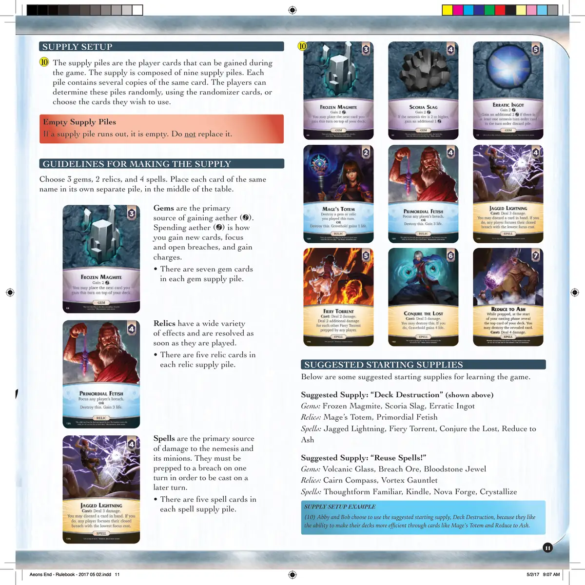
📝 第 11 页 AI 机翻对照（点击展开）
牌库堆是游戏过程中可以获取的玩家卡牌。牌库堆由九个牌库堆组成。每个牌库堆包含多张相同的卡牌。玩家可以通过随机卡牌随机确定这些牌库堆，或者选择他们想要使用的卡牌。
以下是游戏学习时建议的起始牌库堆。
建议牌库堆："牌库破坏"（如上所示）
宝石：Frozen Magmite（冰冻魔晶石）、Scoria Slag（熔渣矿）、Erratic Ingot（不规则锭）
神器：Mage's Totem（法师图腾）、Primordial Fetish（原始神物）
法术：Jagged Lightning（锯齿闪电）、Fiery Torrent（烈焰洪流）、Conjure the Lost（召唤逝者）、Reduce to Ash（化为灰烬）
建议牌库堆："重用法术！"
宝石：Volcanic Glass（火山玻璃）、Breach Ore（裂隙矿石）、Bloodstone Jewel（血宝石）
神器：Cairn Compass（石冢罗盘）、Vortex Gauntlet（漩涡护手）
法术：Thoughtform Familiar（思维形态仆从）、Kindle（点燃）、Nova Forge（新星锻造）、Crystallize（结晶）
宝石是获取以太（ ）的主要来源。
花费以太（ ）是获取新卡牌、专注值和开启裂隙，以及获取充能值的方式。
• 每个宝石牌库堆中有七张宝石卡牌。
法术是对敌人和其仆从造成伤害的主要来源。它们必须在一个回合中被准备到裂隙上，才能在之后的回合中被施放。
• 每个法术牌库堆中有五张法术卡牌。
神器具有多种多样的效果，一旦被使用就会立即结算。
• 每个神器牌库堆中有五张神器卡牌。
牌库堆设置示例
(10) Abby和Bob选择使用建议的起始牌库堆"牌库破坏"，因为他们喜欢通过Mage's Totem和Reduce to Ash这样的卡牌使自己的牌库更高效。
空牌库堆
如果一个牌库堆用完了，它就是空的。不要替换它。
选择3个宝石、2个神器和4个法术。将同名卡牌各自放在单独的牌库堆中，放在桌子中央。
建议的起始牌库堆
制作牌库堆的指导方针
牌库堆设置
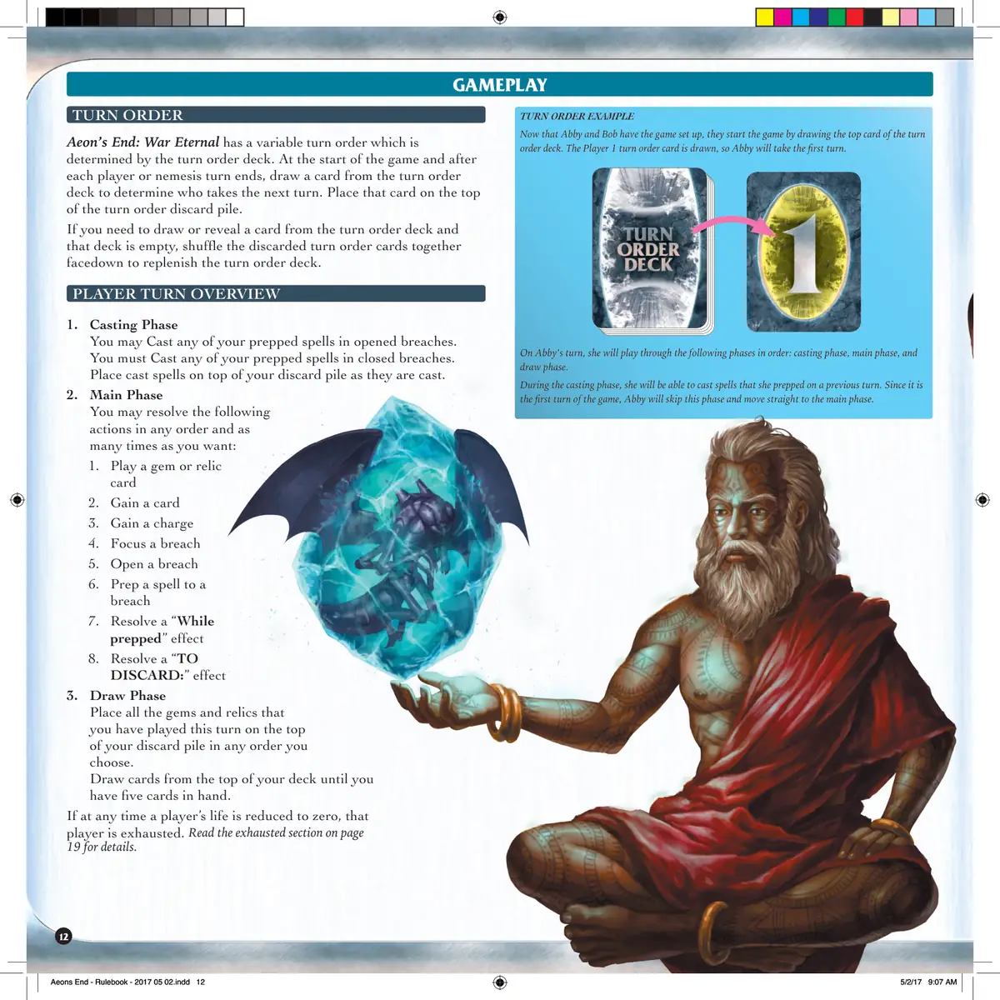
📝 第 12 页 AI 机翻对照（点击展开）
《永恒纪元：战争永恒》(Aeon's End: War Eternal) 采用可变的回合顺序，该顺序由回合顺序牌库决定。在游戏开始时以及每位玩家或 nemesis 回合结束后，从回合顺序牌库抽一张牌来决定谁进行下一个回合。将该牌放置在回合顺序弃牌堆的顶部。
如果你需要从回合顺序牌库抽牌或展示一张牌，而该牌库为空，则将已弃置的回合顺序牌面朝下洗混，以补充回合顺序牌库。
1. 施法阶段
你可以施放任何你准备在已开启裂隙中的法术。
你必须施放任何你准备在已关闭裂隙中的法术。
施放的法术在施放时放置在你的弃牌堆顶部。
2. 主要阶段
你可以按任意顺序并尽可能多次地执行以下行动：
1. 打出宝石或圣物卡牌
2. 获得一张卡牌
3. 获得一点充能
4. 聚焦一个裂隙
5. 开启一个裂隙
6. 将一个法术准备到裂隙中
- 解析"准备时"效果
- 解析"弃置:"效果
3. 抽牌阶段
将你本回合打出的所有宝石和圣物以你选择的任意顺序放置在你的弃牌堆顶部。
从你的牌库顶部抽牌，直到你手中有五张牌。
如果任何时候玩家的生命值降至零，该玩家将被耗尽。阅读第19页的耗尽部分了解详情。
回合顺序示例
现在 Abby 和 Bob 已经完成了游戏设置，他们通过抽取回合顺序牌库顶部的牌开始游戏。抽到了玩家1回合顺序牌，所以 Abby 将进行第一回合。
在 Abby 的回合中，她将依次进行以下阶段：施法阶段、主要阶段和抽牌阶段。
在施法阶段，她将能够施放她在上一回合准备好的法术。由于这是游戏的第一回合，Abby 将跳过此阶段，直接进入主要阶段。
回合顺序
玩家回合概览
游戏玩法
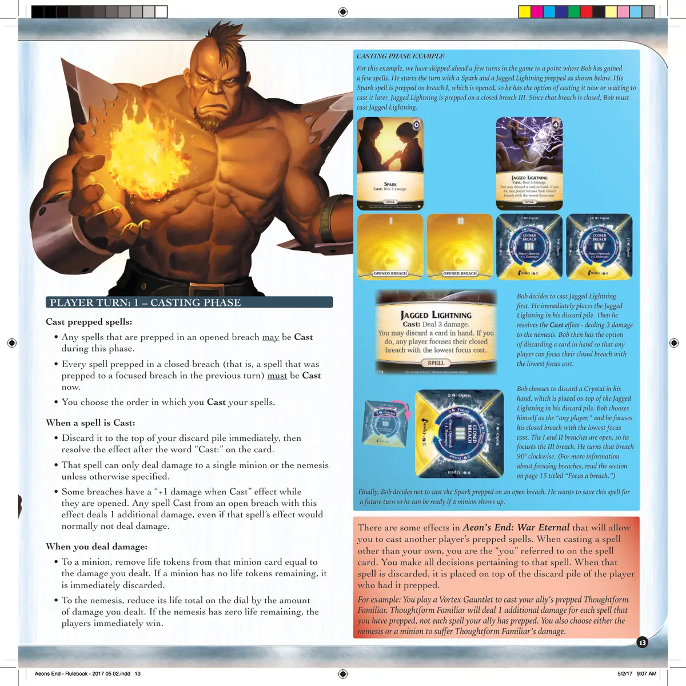
📝 第 13 页 AI 机翻对照（点击展开）
施放准备好的法术：
• 任何在开启的裂隙中准备好的法术都可以在本阶段施放。
• 每个在关闭的裂隙中准备好的法术（即，在上一回合中聚焦到聚焦裂隙的法术）必须立即施放。
• 你选择施放法术的顺序。
当施放法术时：
• 立即将其弃置到你的弃牌堆顶部，然后解决卡牌上"施放："一词后的效果。
• 除非另有说明，否则该法术只能对单个爪牙或 nemesis 造成伤害。
• 一些裂隙在开启时有"施放时+1伤害"的效果。从这个裂隙施放的任何法术都会造成1点额外伤害，即使该法术的效果通常不会造成伤害。
当你造成伤害时：
• 对爪牙，从该爪牙卡牌上移除等于你所造成伤害的生命指示物数量。如果爪牙没有剩余的生命指示物，它会被立即弃置。
• 对 nemesis，在其生命轮盘上减少等于你所造成伤害的生命值。如果 nemesis 剩余生命为零，玩家立即获胜。
在《Aeon's End: War Eternal》中有一些效果允许你施放其他玩家准备好的法术。当施放不是你自己的法术时，你就是法术卡上所指的"你"。你做出与该法术相关的所有决定。当该法术被弃置时，它被放置在拥有它的玩家的弃牌堆顶部。
例如：你使用漩涡护腕来施放你的盟友准备好的思维形态法术。思维形态法术会对你准备好的每个法术造成1点额外伤害，而不是你的盟友准备好的每个法术。你还选择 nemesis 或一个爪牙来承受思维形态法术的伤害。
施放阶段示例
在这个示例中，我们跳过了游戏中的几个回合，来到鲍勃获得了一些法术的时刻。他回合开始时准备了一个火花和锯齿闪电，如下所示。他的火花法术准备在裂隙I上，该裂隙是开启的，所以他可以选择现在施放或等待以后施放。锯齿闪电准备在关闭的裂隙III上。由于该裂隙是关闭的，鲍勃必须施放锯齿闪电。
鲍勃决定先施放锯齿闪电。他立即将锯齿闪电放入他的弃牌堆。然后他解决施放效果 - 对 nemesis 造成3点伤害。然后鲍勃可以选择弃置一张手牌，以便任何玩家都可以用最低聚焦成本聚焦他们的关闭裂隙。
最后，鲍勃决定不施放在开启裂隙上准备好的火花。他想为未来的回合保存这个法术，以便如果有爪牙出现时他能做好准备。
鲍勃选择弃置他手中的一个水晶，它被放置在弃牌堆顶部的锯齿闪电上。鲍勃选择
将自己作为"任意玩家"，并将他封闭的裂隙聚焦到最低的聚焦费用。I和II号裂隙是开放的，所以他聚焦III号裂隙。他将该裂隙顺时针旋转90°。（关于聚焦裂隙的更多信息，请阅读第15页标题为"聚焦裂隙"的部分。）
玩家回合：1 - 施法阶段
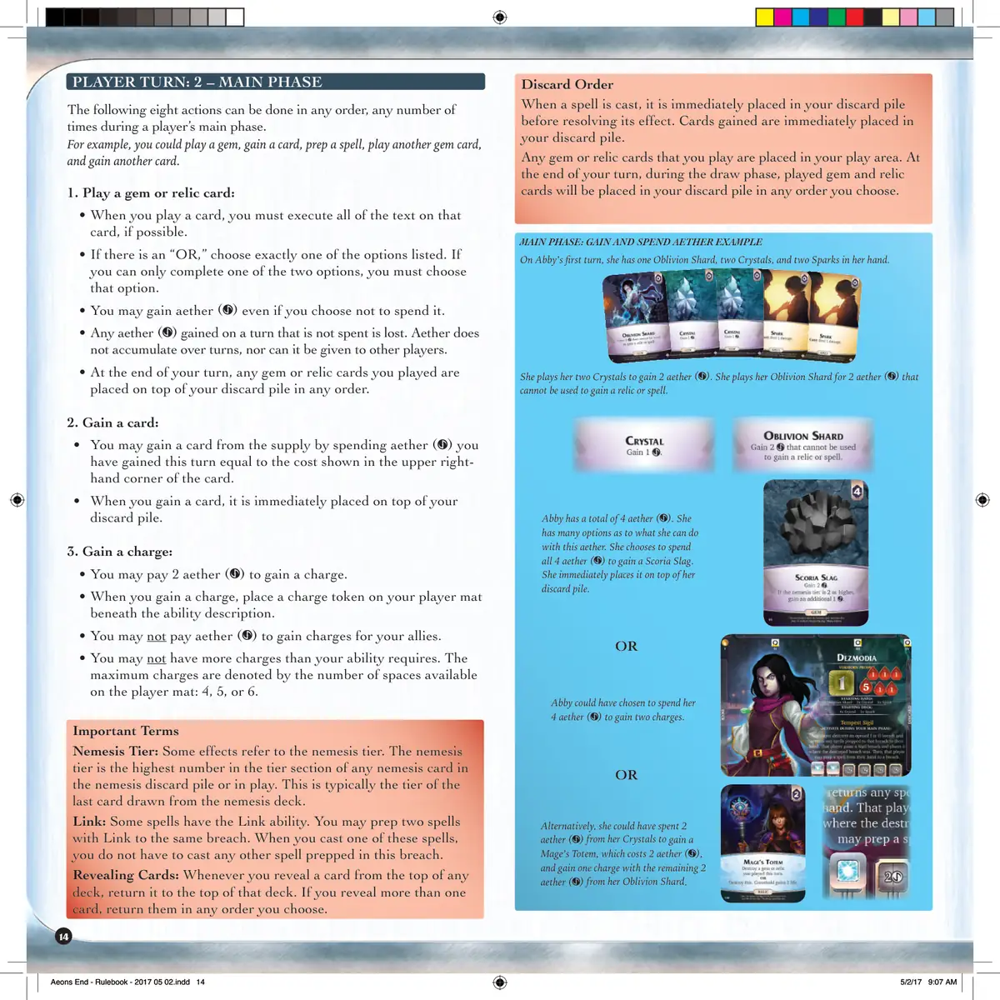
📝 第 14 页 AI 机翻对照（点击展开）
主要阶段：获取与花费以太示例
在艾比的第一回合，她手中有1个遗忘碎片、2个水晶和2个火花。
她打出她的2个水晶来获得2点以太( )。她打出她的遗忘碎片来获得2点以太( )，
这些以太不能用于获取神器或法术。
艾比总共拥有4点以太( )。她
有很多选择可以决定如何使用这些以太。她选择花费全部4点以太( )来获取一个熔渣矿。
她立即将其放置在她的弃牌堆顶部。
艾比也可以选择花费她的4点以太( )来获得两个充能。
或者，她可以花费2点以太( )从她的水晶来获取一个法师图腾，它需要2点以太( )，
并用从遗忘碎片中剩余的2点以太( )获得一个充能。
或者
或者
以下八种行动可以在玩家的主要阶段期间以任何顺序、任意次数执行。
例如，你可以打出一张宝石牌，获取一张卡牌，准备一个法术，再打出另一张宝石牌，
然后获取另一张卡牌。
1. 打出宝石或神器卡牌：
• 当你打出一张卡牌时，如果可能，你必须执行该卡牌上的所有文本。
• 如果有"或"选项，必须从列出的选项中恰好选择一个。如果你只能完成两个选项中的一个，你必须选择那个选项。
• 即使你选择不花费以太，你也可以获得以太( )。
• 在回合中获得的任何未花费的以太都会丢失。以太不会在回合间累积，也不能给予其他玩家。
• 在你的回合结束时，你打出的任何宝石或神器卡牌都会以任意顺序放置在你的弃牌堆顶部。
2. 获取卡牌：
• 你可以通过花费等于卡牌右上角所示费用的以太( )来从牌库中获取一张卡牌。
• 当你获取一张卡牌时，它会被立即放置在你的弃牌堆顶部。
3. 获取充能：
• 你可以支付2点以太( )来获得一个充能。
• 当你获得一个充能时，将一个充能指示物放置在你的玩家垫上能力描述下方。
• 你不能为你的盟友支付以太( )来获得充能。
• 你的充能数量不能超过你的能力要求。最大充能数量由玩家垫上可用格子的数量表示：4、5或6。
弃牌顺序
当法术被施放时，在解析其效果之前，它会被立即放置在你的弃牌堆中。
获取的卡牌会被立即放置在你的弃牌堆中。
你打出的任何宝石或神器卡牌都会被放置在你的游戏区域中。在你的回合结束时，在摸牌阶段，打出的宝石和神器卡牌会以你选择的任意顺序放置在你的弃牌堆中。
重要术语
nemesis等级：某些效果会提到nemesis等级。nemesis等级是nemesis弃牌堆或游戏中任何nemesis卡牌等级部分中的最高数字。这通常是
从 nemesis 牌库最后摸取的卡牌。
链接：一些法术具有链接能力。你可以将两个具有链接的法术准备到同一个裂隙。当你施放这些法术中的一个时，你不必施放在此裂隙中准备的任何其他法术。
揭示卡牌：每当您从任何牌库顶部揭示一张卡牌时，将其返回到该牌库的顶部。如果您揭示多张卡牌，可以按您选择的任意顺序将它们返回。
玩家回合：2 - 主要阶段
Aeons End - Rulebook - 2017 05 02.indd 14
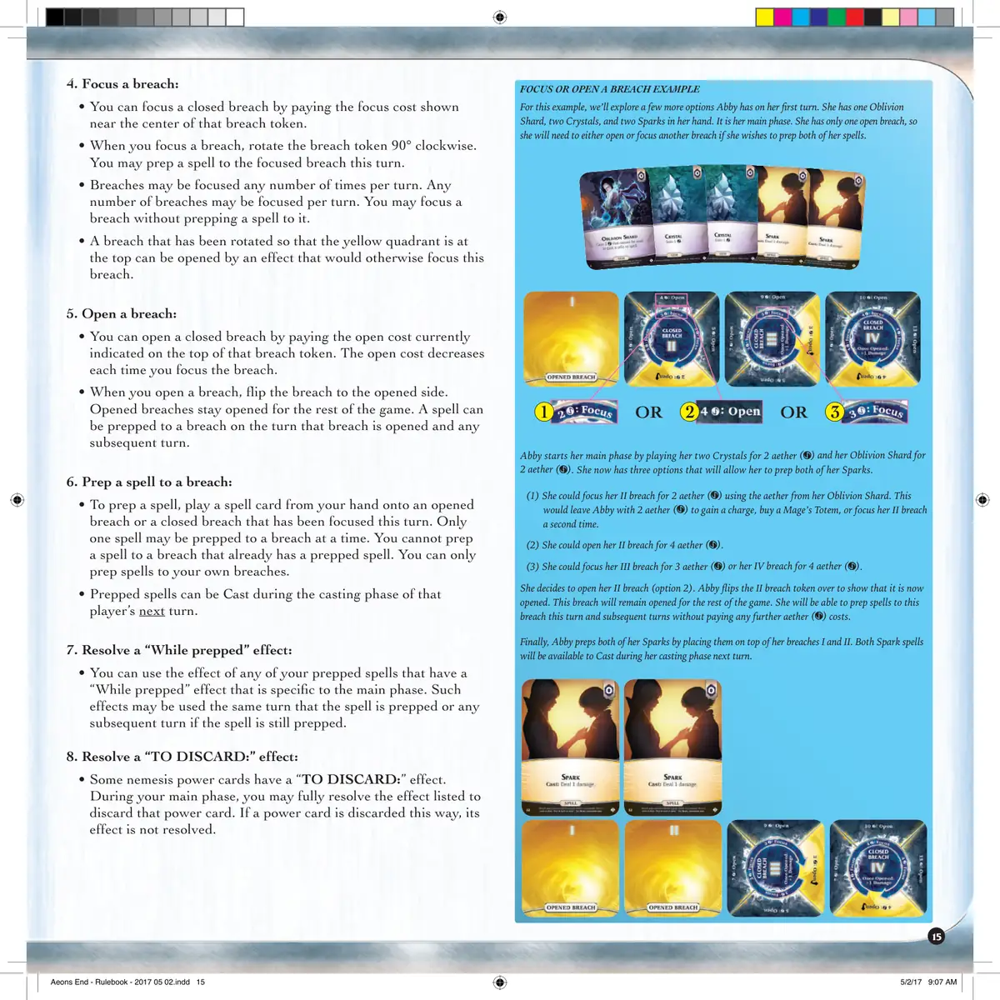
📝 第 15 页 AI 机翻对照（点击展开）
4. 聚焦一个裂隙：
• 你可以通过支付显示在该裂隙指示物中心附近的聚焦费用来聚焦一个关闭的裂隙。
• 当你聚焦一个裂隙时，将该裂隙指示物顺时针旋转90°。你可以在本回合为聚焦的裂隙准备一个法术。
• 每回合可以聚焦裂隙任意次数。每回合可以聚焦任意数量的裂隙。你可以在不为裂隙准备法术的情况下聚焦一个裂隙。
• 当一个裂隙被旋转至黄色象限位于顶部时，可以通过一个原本会聚焦该裂隙的效果来打开它。
5. 打开一个裂隙：
• 你可以通过支付当前显示在该裂隙指示物顶部的打开费用来打开一个关闭的裂隙。每次你聚焦裂隙时，打开费用会降低。
• 当你打开一个裂隙时，将该裂隙翻至打开面。打开的裂隙在游戏剩余时间内保持打开状态。可以在打开裂隙的回合以及任何后续回合为裂隙准备法术。
6. 为裂隙准备法术：
• 要准备法术，从你的手牌中打出一张法术牌到打开的裂隙或本回合已聚焦的关闭裂隙上。一次只能为一个裂隙准备一个法术。你不能为已有准备法术的裂隙准备法术。你只能为自己的裂隙准备法术。
• 准备好的法术可以在该玩家下一回合的施法阶段施放。
- 解析"准备时"效果：
• 你可以使用你任何已准备法术的"准备时"效果，该效果特定于主要阶段。这样的效果可以在法术准备的回合使用，如果法术仍然准备着，也可以在任何后续回合使用。
- 解析"弃置："效果：
• 一些 nemesis 能力卡有"弃置："效果。在你的主要阶段，你可以完全解析列出的效果以弃置该能力卡。如果能力卡以此方式被弃置，其效果不会解析。
聚焦或打开裂隙示例
在这个示例中，我们将探讨 Abby 在她的第一回合上拥有的更多选项。她手中有一次虚空碎片(Oblivion Shard)、两个水晶(Crystals)和两个火花(Sparks)。这是她的主要阶段。她只有一个打开的裂隙，因此如果她想准备她的两个法术，她需要打开或聚焦另一个裂隙。
Abby 通过打出她的两个水晶获得2以太( )和她的虚空碎片获得2以太( )开始她的主要阶段。现在她有三个选项可以让她准备她的两个火花。
(1) 她可以使用来自她虚空碎片的2以太( )聚焦她的 II 裂隙。这将使 Abby 剩余2以太( )，可以用于获得充能、购买法师图腾(Mage's Totem)或第二次聚焦她的 II 裂隙。
(2) 她可以打开她的 II 裂隙，花费4以太( )。
(3) 她可以聚焦她的 III 裂隙，花费3以太( )，或聚焦她的 IV 裂隙，花费4以太( )。
她决定开启她的II裂隙（选项2）。Abby将II裂隙指示物翻转过来，显示它现在已开启。这个裂隙将在游戏的剩余时间内保持开启状态。她将能够在本回合及后续回合中为这个裂隙准备法术，而无需支付任何额外的以太（ ）费用。
最后，Abby通过将她的两个火花放置在她的I和II裂隙上，来准备这两个火花法术。两个火花法术都将在她下回合的施法阶段可以施放。
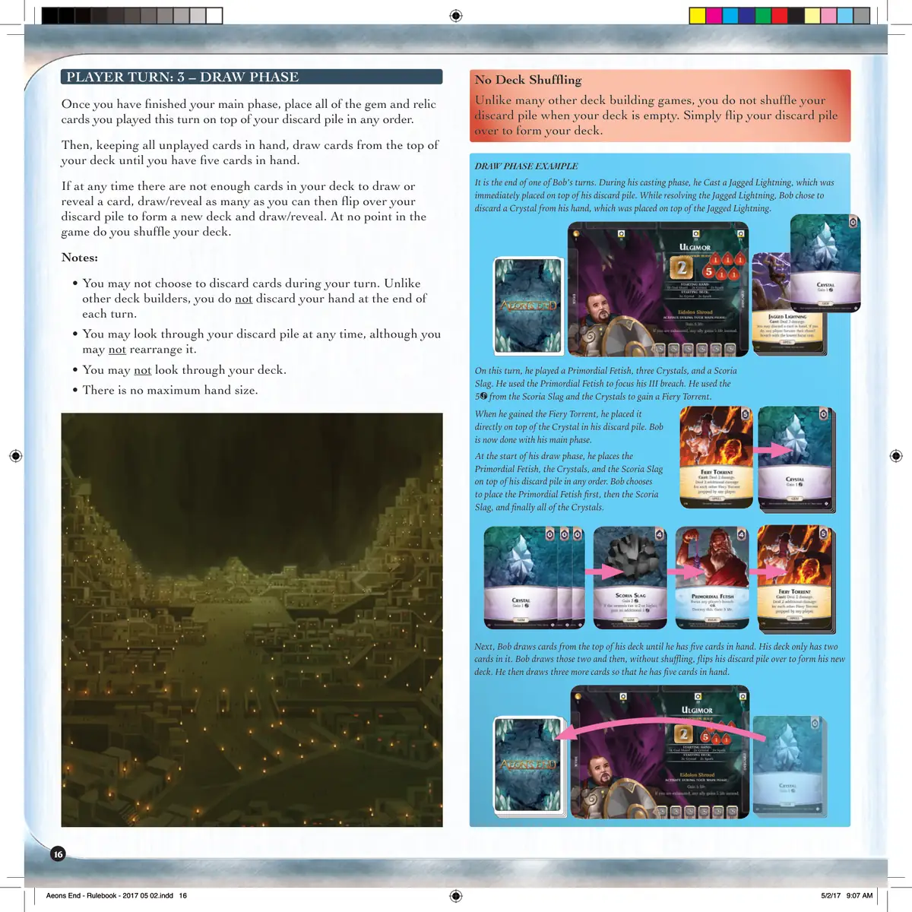
📝 第 16 页 AI 机翻对照（点击展开）
完成你的主要阶段后，将你本回合打出的所有宝石和神器卡牌以任意顺序放在你的弃牌堆顶部。然后，保留所有未打出的卡牌在手牌中，从你的牌库顶部摸牌，直到你手中有五张卡牌。
如果在任何时候你的牌库中没有足够的牌可以摸牌或展示一张牌，就尽可能多地摸牌/展示牌，然后将你的弃牌堆翻过来形成一个新的牌库并摸牌/展示牌。在游戏中的任何时候你都不会洗牌你的牌库。
注释：
• 在你的回合中，你不能选择弃牌。与其他牌库构筑游戏不同，你不会在每个回合结束时弃掉你的手牌。
• 你可以随时查看你的弃牌堆，尽管你不能重新排列它。
• 你不能查看你的牌库。
• 没有手牌上限。
不洗牌
与许多其他牌库构筑游戏不同，当你的牌库为空时，你不会洗你的弃牌堆。只需将你的弃牌堆翻过来形成你的牌库即可。
摸牌阶段示例
这是鲍勃（Bob）一个回合的结束。在他的施法阶段，他施放了"锯齿闪电"（Jagged Lightning），这张牌被立即放在他的弃牌堆顶部。在解决"锯齿闪电"时，鲍勃选择从手牌中弃掉一个水晶（Crystal），这个水晶被放在"锯齿闪电"的顶部。
在这个回合，他打出了一件原始神物（Primordial Fetish）、三个水晶和一个熔渣（Scoria Slag）。他使用原始神物来聚焦他的III级裂隙。他使用熔渣和水晶中的5点能量来获得一股烈焰洪流（Fiery Torrent）。当他获得烈焰洪流时，他直接将其放在他弃牌堆中的水晶顶部。鲍勃现在完成了他的主要阶段。
在他的摸牌阶段开始时，他将原始神物、水晶和熔渣以任意顺序放在他的弃牌堆顶部。鲍勃选择先放置原始神物，然后是熔渣，最后是所有水晶。
接下来，鲍勃从他的牌库顶部摸牌，直到他手中有五张牌。他的牌库中只有两张牌。鲍勃摸了这两张牌，然后不洗牌，将他的弃牌堆翻过来形成他的新牌库。然后他又摸了三张牌，这样他手中有五张牌。
玩家回合：3 - 摸牌阶段
Aeons End - Rulebook - 2017 05 02.indd 16
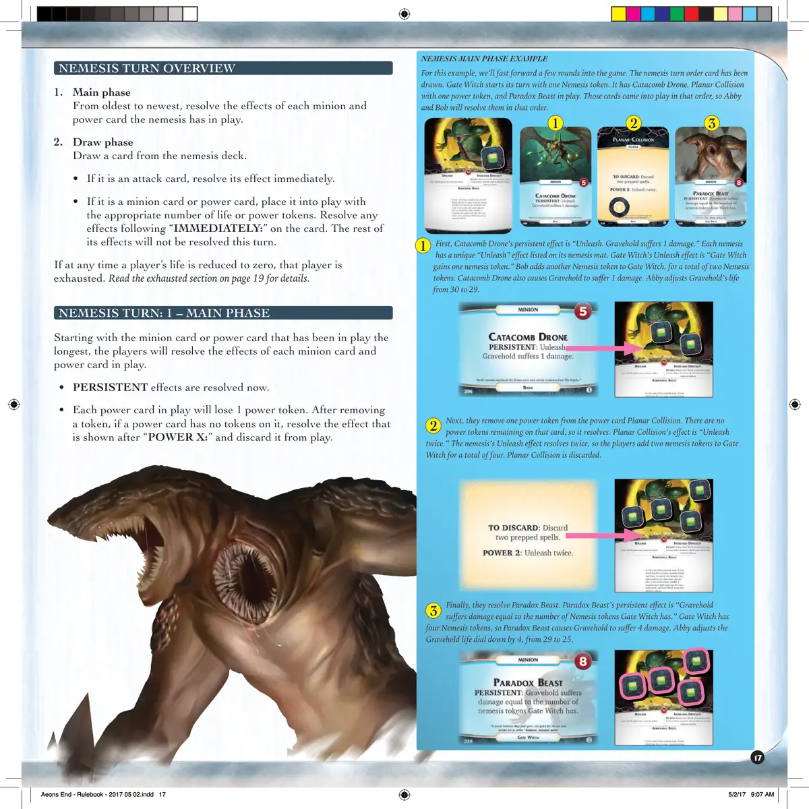
📝 第 17 页 AI 机翻对照（点击展开）
从在场时间最长的随从卡或能力卡开始，玩家将解决每张在场随从卡和能力卡的效果。
• 持续效果现在被解决。
• 每张在场的能力卡将失去1个能力指示物。移除一个指示物后，如果一张能力卡上没有指示物，则解决"力量X:"之后所示的效果并将其从游戏中弃置。
1. 主要阶段
从最旧到最新，解决敌人在场的每张随从卡和能力卡的效果。
2. 摸牌阶段
从敌人牌库摸一张牌。
• 如果是攻击卡，立即解决其效果。
• 如果是随从卡或能力卡，放置其到场上，并附上适当数量的生命或能力指示物。解决卡牌上"立即:"之后的所有效果。其余效果将在本回合不被解决。
如果任何时候玩家的生命值降至零，该玩家将被耗尽。阅读第19页的耗尽部分了解详情。
敌人回合概览
敌人回合：1 - 主要阶段
首先，墓穴无人机的持续效果是"释放。墓堡承受1点伤害。"每个敌人在其敌人版图上列有独特的"释放"效果。女巫门的释放效果是"女巫门获得一个敌人指示物。"鲍勃为女巫门添加另一个敌人指示物，总计两个敌人指示物。墓穴无人机也导致墓堡承受1点伤害。艾比将墓堡的生命值从30调整到29。
接下来，他们从能力卡"平面碰撞"上移除一个能力指示物。该卡上不再有能力指示物，因此它被解决。平面碰撞的效果是"释放两次。"敌人的释放效果解决两次，因此玩家为女巫门添加两个敌人指示物，总计四个。平面碰撞被弃置。
最后，他们解决悖论野兽。悖论野兽的持续效果是"墓堡承受的伤害等于女巫门拥有的敌人指示物数量。"女巫门有四个敌人指示物，因此悖论野兽导致墓堡承受4点伤害。艾比将墓堡生命值指示器向下调整4点，从29降至25。
敌人主要阶段示例
在这个示例中，我们将快进到游戏进行几轮后。敌人回合顺序卡已被抽出。女巫门以其拥有的一个敌人指示物开始其回合。它有墓穴无人机、带有一个能力指示物的平面碰撞和悖论野兽在场。这些卡牌按此顺序进入游戏，因此艾比和鲍勃将按此顺序解决它们。
Aeons End - Rulebook - 2017 05 02.indd 17
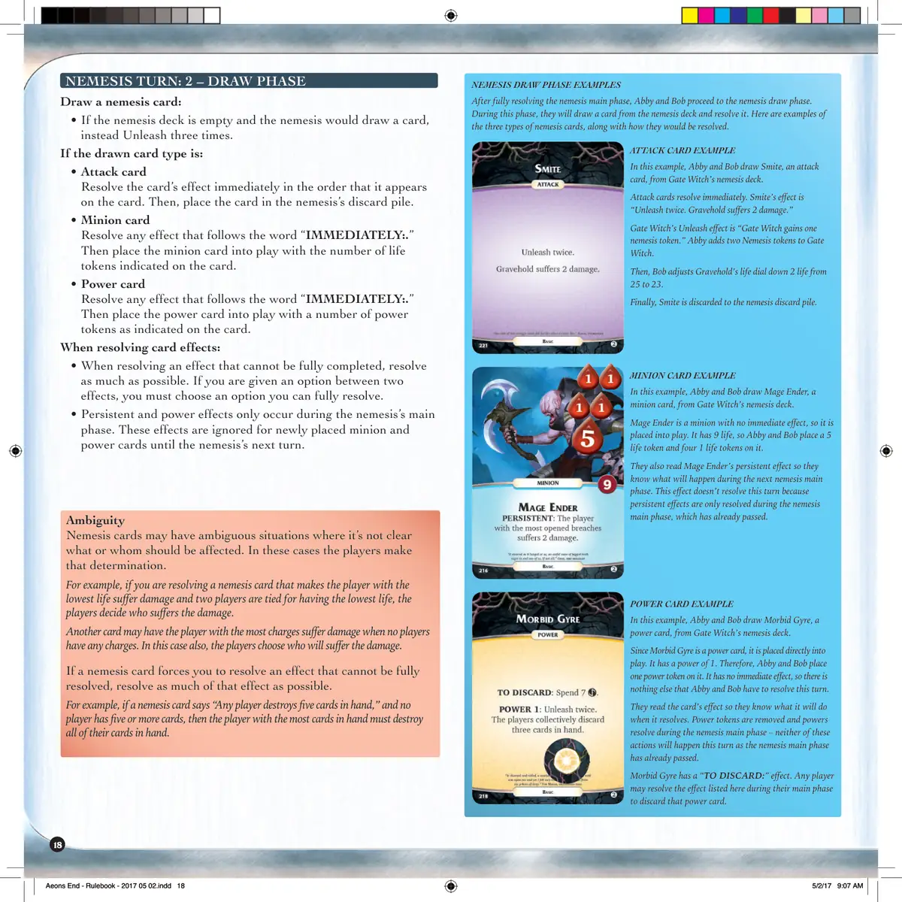
📝 第 18 页 AI 机翻对照（点击展开）
抽取一张 nemesis 卡牌：
• 如果 nemesis 牌库为空且 nemesis 需要摸牌，
则改为释放三次。
如果抽取的卡牌类型是：
• 攻击卡牌
立即按照卡牌上出现的顺序解析卡牌效果。然后将该卡牌放入 nemesis 的弃牌堆。
• 爪牙卡牌
解析"IMMEDIATELY:"（立即）一词后的任何效果。然后将爪牙卡牌置入游戏，并放置卡牌上指示数量的生命指示物。
• 力量卡牌
解析"IMMEDIATELY:"（立即）一词后的任何效果。然后将力量卡牌置入游戏，并放置卡牌上指示数量的力量指示物。
解析卡牌效果时：
• 当解析无法完全完成的效果时，尽可能多地解析。如果需要在两个效果之间选择，你必须选择一个能够完全解析的效果。
• 持续效果和力量效果仅在 nemesis 的主要阶段发生。对于新置入的爪牙卡牌和力量卡牌，这些效果会被忽略，直到 nemesis 的下一个回合。
NEMESIS 抽牌阶段示例
在完全解析 nemesis 主要阶段后，Abby 和 Bob 进入 nemesis 抽牌阶段。
在此阶段，他们将从 nemesis 牌库中抽取一张卡牌并解析它。以下是三种 nemesis 卡牌类型的示例，以及它们将被如何解析。
爪牙卡牌示例
在此示例中，Abby 和 Bob 从 Gate Witch 的 nemesis 牌库中抽取了 Mage Ender，一张爪牙卡牌。
Mage Ender 是一张没有立即效果的爪牙卡牌，因此它被置入游戏。它有 9 点生命值，所以 Abby 和 Bob 在它上面放置了一个 5 点生命指示物和四个 1 点生命指示物。
他们还阅读了 Mage Ender 的持续效果，以便知道在下一个 nemesis 主要阶段会发生什么。这个效果不会在本回合解析，因为持续效果仅在 nemesis 主要阶段解析，而该阶段已经过去。
力量卡牌示例
在此示例中，Abby 和 Bob 从 Gate Witch 的 nemesis 牌库中抽取了 Morbid Gyre，一张力量卡牌。
由于 Morbid Gyre 是一张力量卡牌，它被直接置入游戏。它的力量值为 1。因此，Abby 和 Bob 在它上面放置了一个力量指示物。它没有立即效果，所以 Abby 和 Bob 本回合没有其他需要解析的内容。
他们阅读了卡牌的效果，以便知道它解析时会做什么。力量指示物被移除和力量效果解析都在 nemesis 主要阶段进行——由于 nemesis 主要阶段已经过去，这两个动作都不会在本回合发生。
Morbid Gyre 有一个"TO DISCARD:"（弃置）效果。任何玩家可以在他们的主要阶段解析此处列出的效果，以弃置该力量卡牌。
攻击卡牌示例
在此示例中，Abby 和 Bob 从 Gate Witch 的 nemesis 牌库中抽取了 Smite，一张攻击卡牌。
攻击卡牌立即解析。Smite 的效果是"释放两次。Gravehold 受到 2 点伤害。"
厄运回合：2 - 抽牌阶段
歧义
厄运卡牌可能存在不明确的情况，不清楚应该影响什么或谁。在这种情况下，由玩家做出决定。
例如，如果你正在解析一张让生命值最低的玩家承受伤害的厄运卡牌，且两名玩家并列拥有最低生命值，那么玩家们决定谁承受伤害。
另一张卡牌可能规定拥有最多充能的玩家承受伤害，但当没有任何玩家拥有任何充能时。在这种情况下，玩家们也选择谁将承受伤害。
如果一张厄运卡牌迫使你解析一个无法完全解析的效果，则尽可能多地解析该效果。
例如，如果一张厄运卡牌说"任何玩家摧毁五张手牌"，但没有玩家拥有五张或更多手牌，那么手牌最多的玩家必须摧毁他们所有的手牌。
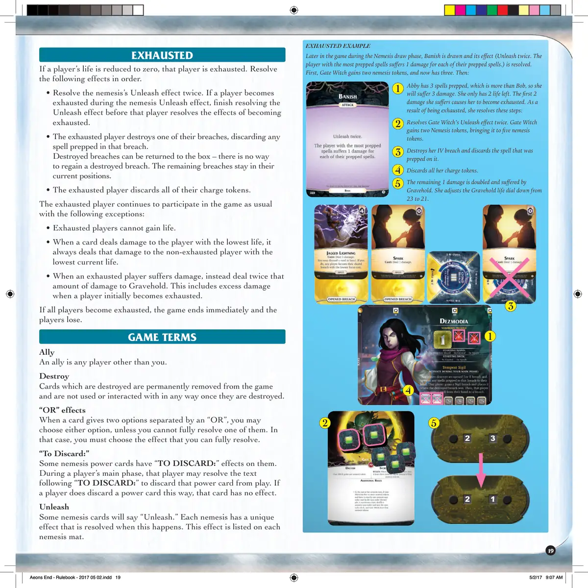
📝 第 19 页 AI 机翻对照（点击展开）
精疲力尽示例
游戏后期在尼莫西斯(Nemesis)摸牌阶段，抽到了放逐(Banish)牌，其效果（释放两次。拥有最多准备法术的玩家每准备一个法术就会受到1点伤害。）被结算。
首先，门女巫(Gate Witch)获得两个尼莫西斯指示物，现在共有三个。然后：
艾比(Abby)准备了3个法术，比鲍勃(Bob)多，因此她将受到3点伤害。她只剩下2点生命值。她受到的前2点伤害导致她变得精疲力尽。作为精疲力尽的结果，她按顺序结算以下步骤：
结算门女巫的释放效果两次。门女巫获得两个尼莫西斯指示物，使其达到五个尼莫西斯指示物。
摧毁她的IV裂口(IV breach)并弃掉准备在其上的法术。
弃掉她所有的充能指示物。
剩余的1点伤害被翻倍并由墓镇(Gravehold)承受。她将墓镇生命值指示器从23调至21。
盟友
盟友是指除你以外的任何玩家。
摧毁
被摧毁的卡牌会永久移出游戏，一旦被摧毁，不再以任何方式使用或互动。
"或"效果
当一张卡牌提供了由"或"分隔的两个选项时，你可以选择任一选项，除非你无法完全结算其中之一。在这种情况下，你必须选择能够完全结算的效果。
"弃置："
一些尼莫西斯能力牌上有"弃置："效果。在玩家的主要阶段，该玩家可以结算"弃置："后的文本来弃置该能力牌。如果玩家确实以这种方式弃置了一张能力牌，该牌没有效果。
释放
一些尼莫西斯牌会写"释放"。每个尼莫西斯都有独特的效果，在此时结算。该效果列在每个尼莫西斯垫上。
游戏术语
如果玩家的生命值降至零，该玩家就会精疲力尽。按顺序结算以下效果。
• 结算尼莫西斯的释放效果两次。如果玩家在尼莫西斯释放效果期间变得精疲力尽，先完成释放效果的结算，然后该玩家再结算精疲力尽的效果。
• 精疲力尽的玩家摧毁其一处裂口，弃掉在该裂口中准备的任何法术。
被摧毁的裂口可以放回盒中——无法恢复被摧毁的裂口。剩余的裂口留在当前位置。
• 精疲力尽的玩家弃掉其所有的充能指示物。
精疲力尽的玩家继续正常参与游戏，但有以下例外：
• 精疲力尽的玩家无法获得生命值。
• 当卡牌对生命值最低的玩家造成伤害时，总是对当前生命值最低的非精疲力尽玩家造成该伤害。
• 当精疲力尽的玩家受到伤害时，改为对墓镇造成双倍伤害。这包括玩家最初变得精疲力尽时的超额伤害。
如果所有玩家都变得精疲力尽，游戏立即结束，玩家失败。
精疲力尽
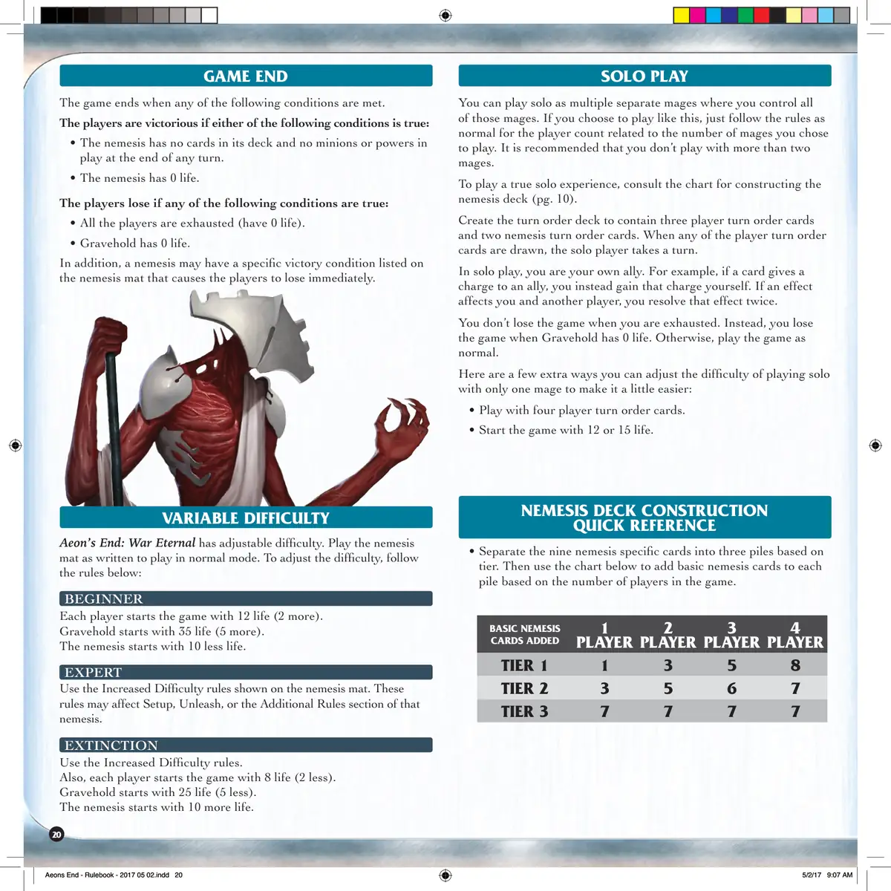
📝 第 20 页 AI 机翻对照（点击展开）
当满足以下任一条件时，游戏结束。
如果满足以下任一条件，玩家获胜：
• 在任何回合结束时，敌对牌库中没有卡牌，且场上没有爪牙或能力。
• 敌对生命值为0。
如果满足以下任一条件，玩家失败：
• 所有玩家都精疲力竭（生命值为0）。
• 墓堡生命值为0。
此外，敌对版图上可能列有特定的胜利条件，会导致玩家立即失败。
你可以作为多个独立的法师进行单人游戏，由你控制所有这些法师。如果你选择这样玩，只需按照与所选法师数量相关的玩家数量规则正常进行。建议不要玩超过两个法师。
要进行真正的单人游戏，请查阅构建敌对牌库的图表（第10页）。
创建回合顺序牌库，包含三张玩家回合顺序牌和两张敌对回合顺序牌。当抽到任何玩家回合顺序牌时，单人玩家进行一个回合。
在单人游戏中，你是自己的盟友。例如，如果一张卡牌给予盟友充能，你则自己获得该充能。如果一个效果影响你和另一名玩家，你将该效果解析两次。
当你精疲力竭时，你不会输掉游戏。相反，当墓堡生命值为0时，你输掉游戏。否则，正常进行游戏。
以下是几种调整单人游戏难度的额外方法，使单人游戏只有一个法师时变得稍微容易一些：
• 使用四张玩家回合顺序牌。
• 游戏开始时拥有12点或15点生命。
• 将九张敌对特定牌根据等级分成三堆。然后根据游戏中的玩家数量，使用下表为每堆添加基础敌对牌。
《永恒纪元：战争永恒》具有可调节难度。按照所述使用敌对版图进行正常模式游戏。要调整难度，请遵循以下规则：
游戏结束
可变难度
单人游戏
敌对牌库构建
快速参考
初级
专家
灭绝
每位玩家游戏开始时拥有12点生命（多2点）。
墓堡开始时拥有35点生命（多5点）。
敌对开始时生命值少10点。
使用敌对版图上显示的"增加难度"规则。这些规则可能影响该敌对的设置、释放或附加规则部分。
使用"增加难度"规则。
此外，每位玩家游戏开始时拥有8点生命（少2点）。
墓堡开始时拥有25点生命（少5点）。
敌对开始时生命值多10点。